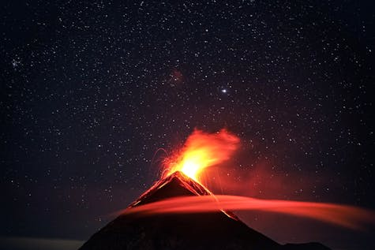
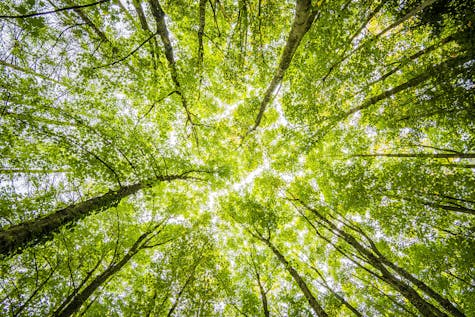

Nature is made up of many elements and there is a special beauty in how they relate to each other and can be mixed. Fire and water can be seen as opposites, but in relation to other elements they have the ability to mix and create stunning views. When ground and fire come together, and when water and grass come together, new environments and natural beauty is brought to the world.
Ground and Fire
Volcanos are a great example of when ground and fire (using more related to heat, and high temperatures) are mixed. As the heat increases, the ground can assume different forms and even pass from solid to liquid. If you want to meet some Pokémon closely related to these elements, click on the image below.
Grass and Water
Big forests are great places to find water. We can find it in rivers, lakes, and inside plants. This connection that plants have with water is precious and puts plants in an important place in the water cycle, helping to maintain the necessary flow. If you want to meet some Pokémon closely related to grass and water elements, click on the image below.
